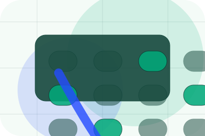
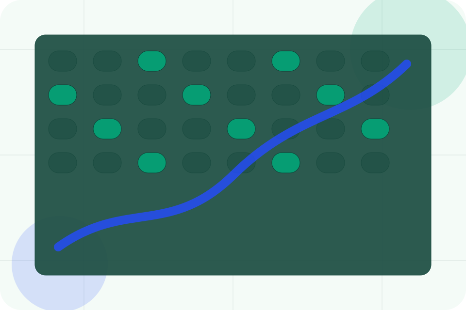
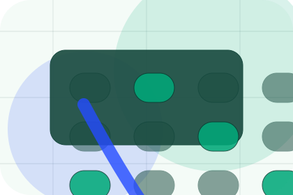
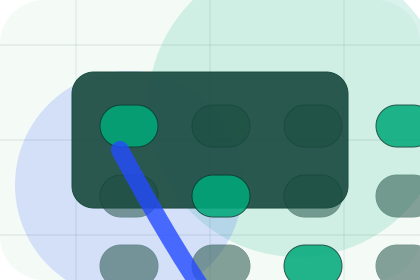
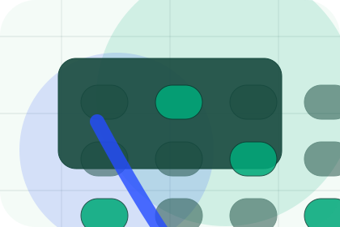
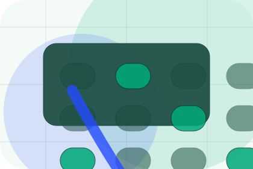
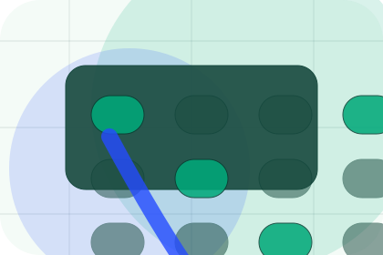
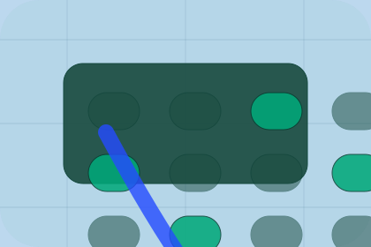

Context
ESG gives the page a specific angle instead of repeating the navigation label.
Reports / 01
Reports opens as a clear environmental decision hub: what Terra offers, who it helps, why it matters, and which route to take first.
The first screen combines positioning, proof, primary action, and fast internal navigation, so people can act immediately or compare the rest of the reports route with context.
Emissions dashboard hero
Select the closest route and Terra keeps the next step, proof, and follow-up expectation aligned with accountability and measurable change.

Reports / 02
ESG adds technical context to the reports route, using the climate data operating system structure to support accountability and measurable change before visitors choose a next step.
Terra uses carbon evidence cards and focused copy to make the decision easier to scan, aligning the section with accountability and measurable change rather than filling space.
Explore Reports
ESG gives the page a specific angle instead of repeating the navigation label.

The carbon evidence cards show what to compare, what to avoid, and what matters most for environmental, sustainability & climate services visitors.

The final cue points to a useful internal route so the section keeps the journey moving.
Reports / 03
Carbon adds technical context to the reports route, using the climate data operating system structure to support accountability and measurable change before visitors choose a next step.
Terra uses carbon evidence cards and focused copy to make the decision easier to scan, aligning the section with accountability and measurable change rather than filling space.
Explore ReportsCarbon gives the page a specific angle instead of repeating the navigation label.
The carbon evidence cards show what to compare, what to avoid, and what matters most for environmental, sustainability & climate services visitors.
The final cue points to a useful internal route so the section keeps the journey moving.
Reports / 04
Compliance gives the proof layer for reports: standards, evidence, and reassurance that make the next decision feel grounded.
Instead of relying on vague claims, Terra presents visible standards, process cues, and proof artifacts that help environmental visitors judge fit.
Explore ReportsVisible proof that helps visitors believe the claims behind compliance.
The quality, safety, or operating expectation this section makes explicit.
What becomes clearer before someone decides whether to book an audit.
Reports / 05
Methodology adds technical context to the reports route, using the climate data operating system structure to support accountability and measurable change before visitors choose a next step.
Terra uses carbon evidence cards and focused copy to make the decision easier to scan, aligning the section with accountability and measurable change rather than filling space.
Explore ReportsMethodology gives the page a specific angle instead of repeating the navigation label.
The carbon evidence cards show what to compare, what to avoid, and what matters most for environmental, sustainability & climate services visitors.
The final cue points to a useful internal route so the section keeps the journey moving.
Reports / 06
Data adds technical context to the reports route, using the climate data operating system structure to support accountability and measurable change before visitors choose a next step.
Terra uses carbon evidence cards and focused copy to make the decision easier to scan, aligning the section with accountability and measurable change rather than filling space.
Explore Reports
Data gives the page a specific angle instead of repeating the navigation label.
The carbon evidence cards show what to compare, what to avoid, and what matters most for environmental, sustainability & climate services visitors.
The final cue points to a useful internal route so the section keeps the journey moving.
Reports / 07
Downloads gives researching visitors a practical route into guides, checklists, and comparison material without leaving the site structure.
Each resource behaves like a useful internal link, giving cold and warm visitors a way to learn, compare, and return to the action path.
View ResourcesA useful entry point for visitors who need more context before they book an audit.
A scannable comparison aid that makes research usable before the next decision.

A route back to support, services, or contact when the visitor is ready to act.
A useful entry point for visitors who need more context before they book an audit.
Open resourceA scannable comparison aid that makes research usable before the next decision.
Open resourceA route back to support, services, or contact when the visitor is ready to act.
Open resourceReports / 08
Archive adds technical context to the reports route, using the climate data operating system structure to support accountability and measurable change before visitors choose a next step.
Terra uses carbon evidence cards and focused copy to make the decision easier to scan, aligning the section with accountability and measurable change rather than filling space.
Explore ReportsArchive gives the page a specific angle instead of repeating the navigation label.
The carbon evidence cards show what to compare, what to avoid, and what matters most for environmental, sustainability & climate services visitors.

The final cue points to a useful internal route so the section keeps the journey moving.
Reports / 09
Verification adds technical context to the reports route, using the climate data operating system structure to support accountability and measurable change before visitors choose a next step.
Terra uses carbon evidence cards and focused copy to make the decision easier to scan, aligning the section with accountability and measurable change rather than filling space.
Explore ReportsTerra structures verification around context, judgment, and a clear next route so visitors can compare the block quickly before they book an audit.
Book AuditReports / 10
Terra closes the reports route with a clear action, a quick reminder of the value, and a low-friction way to book an audit.
Visitors who are ready can use the primary action. Visitors who are still comparing can scan the section links, proof, and support routes before they book an audit.
Book AuditThe final block keeps the choice simple: act now, compare one more proof route, or send enough detail for a focused response.
Book Auditaccountability and measurable change
A climate-accounting site with emissions dashboards, report proof, methodology panels, and audit CTAs. Reports ends with a direct path to book an audit, plus enough context for visitors who still need to compare.

Book AuditInformation is provided for planning and should be reviewed for the final client, location, and operating rules.